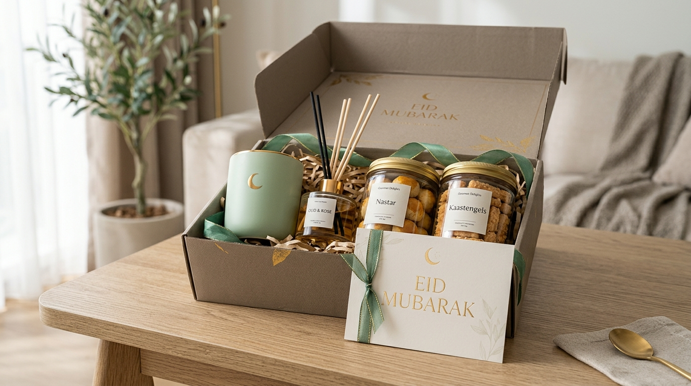

Menjelang perayaan Hari Raya Idulfitri, tradisi menghantarkan bingkisan menjadi simbol silaturahmi yang tak lekang oleh waktu. Kini, tren pemberian bingkisan telah bertransformasi ke arah parcel Lebaran kekinian yang mengedepankan estetika visual, fungsi produk nyata, dan nilai personal yang mendalam.
Apa Itu Parcel Lebaran Kekinian?
Parcel Lebaran kekinian merupakan bentuk bingkisan Hari Raya yang menggabungkan tradisi berbagi dengan pendekatan desain dan kurasi produk modern. Bingkisan tidak hanya dinilai berdasarkan jumlah barang di dalamnya, tetapi juga berdasarkan kesesuaian tema, kualitas isi, keindahan kemasan, serta pengalaman ketika penerima membukanya (unboxing experience).
Konsep ini sangat fleksibel untuk berbagai kebutuhan, mulai dari hadiah keluarga, bingkisan sahabat dekat, pemberian kepada kolega kerja, hingga program corporate gift Lebaran untuk klien korporat dan mitra strategis. Setiap parcel dapat dirancang khusus berdasarkan karakter penerima dan tujuan pemberian.
Perubahan konsep parcel juga memberikan spektrum pilihan yang jauh lebih kaya. Jika dahulu bingkisan Hari Raya identik dengan tumpukan kue kaleng dan sirup dalam balutan keranjang plastik, kini isinya dapat dikombinasikan dengan produk lifestyle, wellness, perlengkapan ibadah premium, hingga peralatan rumah tangga estetik.
Mengapa Parcel Lebaran Modern Semakin Menarik?
Parcel modern menawarkan pengalaman pemberian hadiah yang lebih terkonsep dan bermakna. Pemilihan produk tidak dilakukan secara acak, melainkan diselaraskan dengan kebutuhan praktis penerima:
- Memiliki desain kemasan yang lebih estetik: Kemasan adalah kesan pertama. Penggunaan hardbox kokoh bertekstur, keranjang rotan anyam alami, kotak kayu pinus, hingga tas kain reusable memberikan karakter visual yang mewah. Pilihan warna seperti beige, sage green, putih gading, cokelat hangat, dan aksen emas menghadirkan visual yang teduh namun elegan.
- Mengutamakan manfaat isi produk: Parcel kekinian tidak harus selalu berisi barang mewah berharga fantastis. Produk sederhana seperti racikan teh artisan, cangkir keramik buatan perajin lokal, madu murni, dan toples kue nastar wisman mampu menciptakan harmoni tema tea-time yang sangat fungsional setelah Lebaran.
- Lebih mudah disesuaikan dengan penerima: Parcel dapat dipersonalisasi berdasarkan usia, profesi, hobi, dan relasi. Paket untuk keluarga besar dapat fokus pada sajian dapur bersama, sedangkan hampers sahabat dapat bertema self-care atau hobi menyeduh kopi.
- Memberikan pengalaman membuka hadiah yang berkesan: Kartu ucapan pop-up bertuliskan pesan tulus, hangtag elegan, segel lilin (wax seal), pita satin dobel, dan kemasan berlapis menjadikan momen membuka bingkisan sebagai memori yang menyenangkan.

Apa Perbedaan Parcel dan Hampers Lebaran?
Dalam percakapan sehari-hari di Indonesia, istilah "parcel" dan "hampers" kerap dipakai bergantian. Namun secara historis dan tren industri kreatif, terdapat beberapa perbedaan karakteristik dalam penyajian:
| Aspek | Parcel Lebaran | Hampers Lebaran |
|---|---|---|
| Konsep | Bingkisan beragam produk yang ditata menjulang atau bersusun praktis. | Hadiah tematik terkurasi dengan fokus pada keselarasan estetika. |
| Wadah / Kemasan | Keranjang rotan terbuka, plastik pembungkus transparan, atau kardus motif. | Rigid hardbox tertutup, kotak kayu rustic, boks akrilik transparan. |
| Fokus Isi | Kue kering, sirup, sembako, minuman, dan makanan kemasan siap saji. | Produk tematik (lifestyle, home wellness, perlengkapan ibadah, artisan). |
| Tampilan Visual | Meriah, produk terlihat jelas dari luar melalui kemasan plastik. | Estetik, minimalis, rapi, dan memberikan kejutan saat dibuka. |
| Target Penggunaan | Keluarga besar, tetangga, kerabat, komunitas luas. | Sahabat karib, relasi profesional B2B, eksekutif, klien VIP. |
| Tingkat Personalisasi | Standar kartu ucapan gantung. | Dapat dipersonalisasi (nama penerima, sleeve logo perusahaan, custom warna). |
Perbedaan di atas tentu bukan batasan kaku. Anda bisa memesan parcel dengan kemasan hardbox mewah di katalog paket parcel Lebaran yang memadukan keunggulan kedua konsep tersebut.
Apa Saja Inspirasi Model Parcel Lebaran Kekinian?
Untuk memberikan gambaran konkret sebelum Anda memesan atau merancang hampers, berikut beberapa konsep model kekinian yang sedang banyak diminati:
- 1. Parcel Eco-Friendly: Menjawab kepedulian terhadap lingkungan dengan wadah tote bag kanvas atau kotak kraft yang dapat dipakai ulang, tumbler food-grade, serta sedotan dan peralatan makan kayu bambu. Ulasan lengkap konsep ini dapat Anda temukan pada artikel inspirasi parcel Lebaran modern dan unik.
- 2. Parcel Lifestyle dan Hobi: Dirancang khusus sesuai minat penerima, seperti paket manual brew coffee (biji kopi arabika lokal, cangkir keramik, dan coffee dripper) atau paket produktivitas kerja (agenda kulit sintetis dan pulpen metal).
- 3. Parcel Home Wellness: Menghadirkan ketenangan seusai rutinitas Ramadan melalui reed diffuser aroma lavender/serai alami, lilin aromaterapi kedelai (soy candle), serta sabun herbal artisan.
- 4. Parcel Peralatan Dapur Estetik: Berisi piring keramik motif moroccan, toples kaca kedap udara, serbet linen premium, dan sendok kayu sawo yang sangat digemari ibu rumah tangga maupun pasangan muda.
- 5. Parcel Kuliner Premium: Tetap menjadi favorit utama Idulfitri dengan upgrade kualitas isi seperti nastar keju wisman, cokelat praline, madu akasia mentah, kurma ajwa Madinah, dan teh artisan bunga telang.
Bagaimana Memilih Isi Parcel Lebaran yang Tepat?
Memilih isi bingkisan menuntut kejelian agar hadiah tidak berakhir menumpuk di lemari penerima tanpa terpakai. Terapkan lima langkah praktis berikut:
Kenali Profil Penerima
Identifikasi usia, kebutuhan rumah tangga, profesi, hingga pantangan diet penerima (misal bebas gula atau halal certified).
Tetapkan Satu Tema Tunggal
Hindari mencampuradukkan barang tanpa cerita. Tema seperti "Relaksasi Lebaran" atau "Koleksi Teh Nusantara" membuat bingkisan terlihat matang terkonsep.
Periksa Keamanan & Expired Date
Pastikan masa kedaluwarsa makanan minimal 6 bulan ke depan, segel pabrik utuh, dan produk kosmetik/wellness memiliki izin edar resmi.
Kalkulasi Anggaran Komprehensif
Hitung total biaya mencakup isi barang, wadah kemasan, aksesoris dekorasi, perakitan, dan ongkos kirim ekspedisi berpengaman.
Untuk eksplorasi variasi produk lebih lanjut, baca panduan komprehensif kami mengenai ide isi parcel Lebaran kekinian.
Bagaimana Membuat Parcel Lebaran Terlihat Eksklusif?
Kesan mewah tidak selalu bertumpu pada harga barang yang mahal, melainkan pada harmonisasi detail desain:
- Palet Warna Terpadu: Gunakan rumus 2-3 warna utama. Misalnya kombinasi Navy & Gold untuk kesan agung seperti pada Paket Reguler VIP, atau Sage Green & Putih Gading untuk nuansa sejuk menenangkan.
- Material Wadah Kokoh: Rigid hardbox dengan lapisan kertas linen atau kado import memberikan struktur tegak sempurna yang tidak mudah penyok saat ditumpuk.
- Tata Letak Berjenjang: Tempatkan produk berbobot berat di alas belakang, sedangkan item kecil dan toples bening di bagian muka.
- Sentuhan Personalisasi: Hangtag beremboss nama penerima, pita satin tebal, atau segel stempel cap lilin akan langsung mengangkat kelas visual bingkisan Anda.
Kapan Sebaiknya Memilih Hampers Custom?
Paket standar katalog siap kirim sangat praktis, namun opsi custom menjadi pilihan terbaik ketika Anda membutuhkan fleksibilitas khusus:
Bagi pengadaan korporat (B2B corporate gifting), layanan custom memungkinkan pencetakan sleeve box berlogo instansi, warna kemasan yang sesuai dengan brand guideline kantor, serta pilihan isi yang disesuaikan dengan profil jabatan penerima. Anda dapat mencoba merancang simulasi kombinasi paket impian Anda melalui fitur simulasi kalkulator parcel custom kami.
Bagaimana Memastikan Parcel Aman Selama Pengiriman?
Keindahan bingkisan akan sirna seketika apabila toples kaca pecah atau susunan produk berantakan saat sampai di tangan penerima. Lindungi paket dengan kaidah pengemasan standar:
- Pisahkan setiap botol dan toples kaca menggunakan sekat karton tebal bergelombang.
- Balut produk pecah belah satu per satu dengan minimal 2-3 lapis bubble wrap.
- Isi rongga kosong di dalam kotak menggunakan shredded paper padat agar isi tidak bergeser ketika diguncang.
- Gunakan kardus pelindung luar (outer box double wall) dan pasang stiker peringatan Fragile di seluruh sisi luar.
Pelajari panduan teknis langkah demi langkah pengemasan ekspedisi pada ulasan tips menata parcel Lebaran agar rapi dan aman dikirim.
Kesalahan Apa yang Harus Dihindari Saat Memilih Parcel?
Catatan Penting Tim Kurator
- Terpaku Hanya Pada Tampilan Luar: Kemasan pita megah tidak ada artinya jika makanan di dalamnya melempem atau tidak bermerek jelas.
- Mengabaikan Waktu Produksi (Lead Time): Memesan terlalu mepet dengan Hari Raya (H-7) berisiko kehabisan slot produksi vendor atau keterlambatan kurir ekspedisi.
- Ukuran Wadah Terlalu Longgar: Ruang kosong yang dibiarkan tanpa pengganjal akan membuat barang saling bertabrakan dan hancur di jalan.
- Lupa Memeriksa Kebijakan Gifting Perusahaan: Beberapa instansi BUMN atau kementerian memiliki batas nilai gratifikasi bingkisan yang harus dipatuhi.
Tanya Jawab Seputar Parcel Lebaran Kekinian
Parcel Lebaran kekinian adalah bingkisan Idulfitri dengan desain modern, isi produk terkurasi, dan kemasan yang dapat disesuaikan dengan kebutuhan penerima. Pendekatan ini mengutamakan estetika visual, fungsi guna produk, dan pengalaman personal saat membuka hadiah.
Pilihan isi populer saat ini meliputi kue kering premium butter wisman, kurma ajwa pilihan, teh artisan, biji kopi lokal, tumbler stainless, perlengkapan ibadah elegan (sajadah sutra, mukena), lilin aromaterapi wellness, dan perlengkapan dapur keramik estetik.
Parcel umumnya identik dengan susunan barang kebutuhan praktis bertingkat yang dibalut plastik transparan, sedangkan hampers lebih menonjolkan tema terkurasi, wadah tertutup seperti hardbox mewah atau kotak kayu, serta presentasi hadiah yang lebih personal dan artistik.
Ya, sangat bisa. Anda dapat menentukan sendiri jenis wadah, kombinasi isi kue atau aksesoris, warna pita dekorasi, hingga mencetak kartu ucapan khusus dan logo perusahaan melalui layanan parcel custom kami.
Pilihlah vendor terpercaya dengan portofolio pengadaan resmi, produk berizin edar dan bersertifikat halal, kemasan profesional dengan identitas brand kantor, transparansi kontrak pengadaan, serta sistem logistik teruji yang mampu mengantarkan pesanan tepat waktu.
Gunakan partisi sekat karton tebal, bungkus toples atau botol dengan bubble wrap individual, isi ruang sela dengan shredded paper, masukkan ke dalam kardus luar (outer box) berkekuatan double-wall, dan sematkan stiker peringatan Fragile secara mencolok.
Kesimpulan Praktis
Parcel Lebaran kekinian merupakan pilihan bingkisan istimewa yang merajut keindahan tradisi Idulfitri dengan sentuhan modernitas, estetika, dan nilai fungsional nyata. Melalui kurasi produk yang tepat, kemasan berkualitas, dan personalisasi hangat, bingkisan Anda akan menjadi jembatan silaturahmi yang penuh kesan bagi keluarga, sahabat, maupun rekan bisnis.
Sebelum memesan, pastikan Anda telah memetakan kebutuhan penerima, menetapkan anggaran yang proporsional, serta memilih mitra vendor yang memiliki standar keamanan pengemasan teruji.
Ingin Konsultasi Parcel Lebaran Kekinian?
Dapatkan penawaran resmi katalog parcel Lebaran kekinian 2027. Tersedia fasilitas custom branding kantor, kartu ucapan eksklusif, dan garansi pengiriman aman tepat waktu.